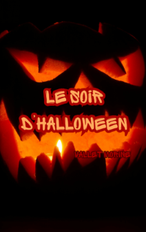
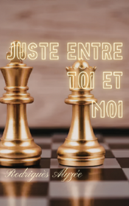

À propos
Qui sommes-nous ?
Bbook est un site qui regroupe les livres les plus lus chaque année mais pas que ! Nous mettons à votre disposition toutes les infos de chacun d'entre eux pour que vous vous fassiez votre propre idée. Le titre, le genre,... et même le prix moyen auquel on trouve chaque livre. Et tout ça, nous le faisons gratuitement ! Aucun frais n'est demandé pour voir telle ou telle info !
Quel genre trouver sur notre site ?
- Romance
- Horreur
- Fantaisie
- Humour
- Biographie
- Policier
- Science-Fiction
- Psychologique
- Fantastique
- Historique
- Aventure
Bonus
Complétez le formulaire pour recevoir une liste de romans selon vos goûts !
Notre Top 3
| Titre | Couverture | Genre | Résumé | Prix | ||
|---|---|---|---|---|---|---|
Le courant de la rivière HanSisnet Valérie |
Psychologique | Anne est une jeune fille qui se retrouve en hôpital psychiatrique à Séoul. Tous les jours se ressemblent et semblants ennuyeux. Et pourtant... par delà sa fenêtre, le courant, lui, semble ne pas s'ennuyer. La jeune fille se demande ce que cela ferait d'être aussi libre que toute cette eau... |
€16,50 | |||
Le soir d'HalloweenVallet Morine |
 |
Horreur | Au milieu de son lieu de vacances, Harry sent que ces fêtes païennes sont plus que de simples superstitions venant des habitants. Les taches rouges suspectes qu'il découvre le lendemain de son arrivée ne font que confirmer ses soupçons... |
€15,99 | ||
Juste entre toi et moiRodriguès Alyzée |
 |
Romance | Rose se souvient du vieux jeu d'échecs de son granp-père. À l'époque, elle n'en trouvait pas l'uilité. Mais ceci, c'était avant le retour de son ami d'enfance qui n'a de cesse de s'amuser à la défier. Malheureusement pour James, Rose déteste perdre. |
€16,20 | ||